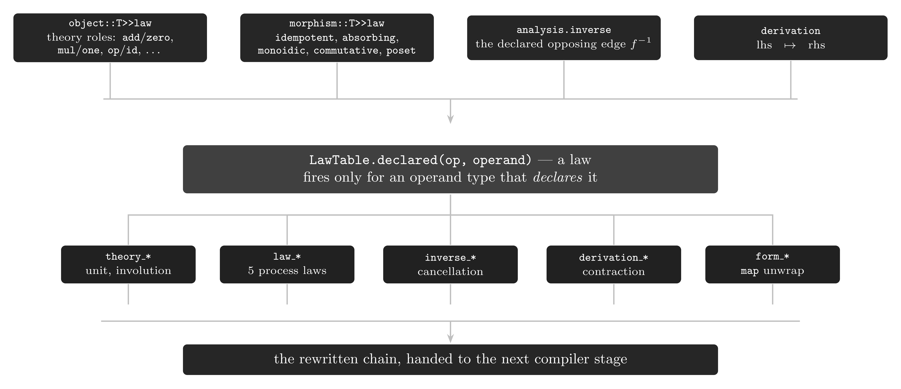

cat-instset
The category graph at /m/math/cat: every type is an **object** (a vertex) and every inst is a **morphism** (an edge). Lift a type with .as(object::T) to read the morphisms incident to it (morphed_to out-edges, morphed_from in-edges); lift an inst with .as(morphism::T) to read its endpoints (src dom, trgt rng) and its whole-graph analysis (family, contested, orbit, position, inverse). TRIGGER: When reading a type's incident morphisms or a morphism's endpoints, when reasoning about a morphism's siblings / inverse / connected component, when classifying an edge's coefficient shape (form), set-theoretic class (class), or declared process laws (law), when wiring the algebraic theories (ring / field / rig / group / monoid / boolean / lattice), when adding a law-driven rewrite — the category *is* the rewrite table — or when lifting code itself into the graph (path::T for value code with rewrite edges, abstraction::T for its pointwise type-level image) to navigate, prune, or plan rewrites.cat-instset-mtron.md
the category graph (/m/math/cat)
/m/math/cat realizes types and insts as a category: types are the objects (the vertices), insts are the
morphisms (the edges), and an inst's dom/rng are its source and target endpoints.
mtron> import(/m/math/cat,cat)
...
The category is not part of the default boot profile: the import above is what mounts /m/math/cat and binds the
cat: alias, and none of the lifts below resolves on a machine that has not imported it.
The lift is a type constructor. An object is constructed from a type and a morphism from an inst. This structure is called the cat-graph.
A vertex is a type lifted to object::T; an edge is an inst lifted to morphism::T. Every morphism is
classified on four axes — form (its n-tid coefficient shape), class (its set-theoretic class), position (its
place in the graph), and law (the algebraic laws it obeys) — and every object carries the structural theories it
models. Those same declarations are what the rewriter stage consumes (see the declared rewrites).
A law is either structural, declared at an object, or process, declared at a morphism. Both kinds of
declaration are consumed by the later lifts: when code::T is modeled as a vertex on a graph of rewrite edges, the
rules a vertex may take are read from exactly these declarations (see the declared rewrites and the third lift).
the first lift — types as objects (object::T)
mtron> int::T.as(object::T)
==>object[int]::[obj=>int::T,
law=>[ring=>ring_theory::[add=>!*/m/inst/plus?rng=/m/int&dom=/m/int,
mul=>!*/m/inst/mult?rng=/m/int&dom=/m/int,
zero=>0,
one=>1],
add_group=>group_theory::[
op=>!*/m/inst/plus?rng=/m/int&dom=/m/int,
id=>0,
inv=>!*/m/inst/neg?rng=/m/int&dom=/m/int],
add_monoid=>monoid_theory::[
op=>!*/m/inst/plus?rng=/m/int&dom=/m/int,
id=>0],
mult_monoid=>monoid_theory::[
op=>!*/m/inst/mult?rng=/m/int&dom=/m/int,
id=>1]],
morphed_to=>!inst?#{*}<=#{?}(){<j>},
morphed_from=>!inst?#{*}<=#{?}(){<j>}]
the object fields
| field | what it is |
|---|---|
obj | the type this object wraps (the vertex itself) |
morphed_to | the morphisms sourced from this object (the outgoing edges) |
morphed_from | the morphisms targeted at this object (the incoming edges) |
law | the structural theories this object models (see the algebraic theories) |
mtron> int::T.as(object::T).morphed_to()
==>morphism::[name=>as,
form=>mapper,
src=>!inst?#{*}<=#{?}(#{*}::T){<j>},
trgt=>!inst?#{*}<=#{?}(#{*}::T){<j>},
analysis=>!inst?#<=#(#{*}::T){<j>},
obj=>as?bool<=int(bool::T){<j>}]
==>morphism::[name=>as,
form=>mapper,
src=>!inst?#{*}<=#{?}(#{*}::T){<j>},
trgt=>!inst?#{*}<=#{?}(#{*}::T){<j>},
analysis=>!inst?#<=#(#{*}::T){<j>},
obj=>as?bytes<=int(bytes::T){<j>}]
==>morphism::[name=>as,
form=>mapper,
src=>!inst?#{*}<=#{?}(#{*}::T){<j>},
trgt=>!inst?#{*}<=#{?}(#{*}::T){<j>},
analysis=>!inst?#<=#(#{*}::T){<j>},
obj=>as?real<=int(real::T){<j>}]
==>morphism::[name=>as,
form=>mapper,
...
the algebraic theories
An object can model several algebraic structures. object::T>>law is a rec keyed by the name given to each
instance at declaration, and each role holds a !* (auto_from) pointer to the live operation rather than a copy:
the graph holds the references, and a role dereferences transparently on >> (...>>law>>ring>>add yields the
inst). The first example above is the int case in full: its law rec declares a ring and the three constituent
group/monoid instances. theory::T is the nominal super-type grouping them:
| type | roles (fields) | what it asserts |
|---|---|---|
ring_theory | add, mul, zero, one | \(\langle R, +, \cdot, 0, 1 \rangle\): \(+\) an abelian group, \(\cdot\) a monoid, \(a \cdot (b + c) = a \cdot b + a \cdot c\) |
field_theory | add, mul, zero, one, inv | \(\langle F, +, \cdot, 0, 1, {}^{-1} \rangle\): a commutative ring where every non-\(0\) element has a multiplicative inverse, \(x \cdot x^{-1} = 1\) |
rig_theory | add, mul, zero, one | \(\langle S, +, \cdot, 0, 1 \rangle\): additive and multiplicative monoids, \(\cdot\) distributive over \(+\), no additive inverses |
group_theory | op, id, inv | \(\langle G, \cdot, 1, {}^{-1} \rangle\): \(g \cdot g^{-1} = g^{-1} \cdot g = 1\) |
monoid_theory | op, id | \(\langle M, \cdot, 1 \rangle\): \(m \cdot 1 = 1 \cdot m = m\) and \((m \cdot n) \cdot p = m \cdot (n \cdot p)\) |
boolean_theory | or, and, not, zero, one | \(\langle B, \lor, \land, \lnot, 0, 1 \rangle\): a complemented distributive lattice, \(b \lor \lnot b = 1\) and \(b \land \lnot b = 0\) |
lattice_theory | meet, join, bottom, top | \(\langle L, \sqcap, \sqcup, \bot, \top \rangle\): every pair of elements has a meet and a join, bounded by \(\bot\) and \(\top\) |
semilattice_theory | op, id | \(\langle S, \sqcup, 0 \rangle\): an idempotent commutative monoid (one side of a lattice) |
near_ring_theory | add, mul, zero | \(\langle N, +, \cdot, 0 \rangle\): \(+\) a group, \(\cdot\) a monoid, one-sided distributivity, no multiplicative \(1\) |
the second lift — insts as morphisms (morphism::T)
mtron> |plus?int<=int(int::T).as(morphism::T)
==>morphism[plus?rng=int&dom=int]::[
name=>plus,
form=>mapper,
class=>[endo],
src=>!inst?#{*}<=#{?}(#{*}::T){<j>},
trgt=>!inst?#{*}<=#{?}(#{*}::T){<j>},
analysis=>!inst?#<=#(#{*}::T){<j>},
obj=>plus?int<=int(int::T),
...(1 more)]
The | in that expression is a block inst; it keeps the instruction from being evaluated, so that the raw inst is
lifted rather than its result.
the morphism fields
| field | what it is |
|---|---|
name | the operation's name |
obj | the inst this morphism wraps (the edge itself) |
form | the n-tid coefficient shape — see the form axis |
class | the set-theoretic class (endo, iso, auto, mono, epi, section, retraction) |
src | the source object (the morphism's dom) |
trgt | the target object (the morphism's rng) |
derivation | the declared defining equation, lhs ↦ rhs, when the operation is derived (see the declared rewrites) |
law | the declared process laws the morphism obeys (see the process laws) |
analysis | a lazy sub-block of whole-graph stats — see the analysis sub-block |
the form axis
form is the morphism's n-tid coefficient shape — the (dom_c, rng_c) pair in regex notation:
| form | what it is |
|---|---|
initial | maps nothing to objs (dom_c = 0) |
terminal | maps objs to nothing (rng_c = 0) |
mapper | one-to-one obj transformation (dom_c = rng_c = 1) |
filter | conditionally passes or drops an obj (dom_c = 1, rng_c = {0,1}) |
flatmapper | one-to-many obj transformation (dom_c = 1, rng_c > 1) |
scatter | maps an obj to objs (rng_c = {0,}) |
gather | maps objs to objs (dom_c = {0,}) |
reducer | gathers objs into a single output (rng_c = 1) |
fork | splits objs across parallel streams |
join | merges parallel streams into a single stream |
catcher | intercepts a fail obj for recovery |
standard | an instruction with no well-defined classification |
Two forms collapse onto the stream-ring's function subrings for the rewrite algebra: scatter is the linearized
one-to-many (flatmapper) and join is the many-to-many merge (gather). On that projection, a coefficient floats
through mapper / filter / flatmapper — the floatable run — and is anchored by reducer / gather — the
blocked cut (see the process laws).
the dual incidence
src/trgt and morphed_to/morphed_from are the same relation seen from opposite sides:
| from | dom side (out) | rng side (in) |
|---|---|---|
| an object | morphed_to | morphed_from |
| a morphism | src | trgt |
morphed_to(A) is \(\{ f \mid \mathrm{src} (f) = A \}\); morphed_from(A) is \(\{ f \mid \mathrm{trgt} (f) = A \}\).
Composing them round-trips — from an object to its edges and back, or from an edge to its endpoints and back.
the analysis sub-block
analysis is one lazy auto() — evaluated with >>analysis. Inside it, each stat is itself lazy:
| field | what it is |
|---|---|
family | the same-name siblings: \(\{ g \mid \mathrm{op}(g) = \mathrm{op}(f) \}\) — every registration of the same operator |
contested | the witness edges behind the ambiguous / incomparable labels — the competing siblings |
orbit | the connected component of the source object in the reversible core — all objects reached by edges that exist in both directions |
position | the edge's place among its siblings (a subset of the six kinds below) |
inverse | the opposing edge \(f^{-1}\) with \(f \cdot f^{-1} = 1\) (only when a declared inverse exists) |
combiner | the edge a reducer's partials recombine through, \((a \uplus b) \cdot r = (a \cdot r \uplus b \cdot r) \cdot \mathrm{combiner}(r)\) — computed, never declared: a fold declaring monoidic + commutative is its own, a fold defined by its derivation names the fold that defines it (count ↦ sum, order ↦ kmerge); a keyed fold (group) recombines pointwise through a chain — sum, then a per-key fold — that no single edge names, so it has none here |
the six edge kinds
position classifies an edge against the rest of the graph into up to six labels:

| kind | the relation to the graph |
|---|---|
duplicate | another morphism of the same family maps the same dom to the same rng |
ambiguous | contested by an incomparable sibling that overlaps it — dispatch has no winner |
incomparable | contested by an incomparable, disjoint sibling — dispatch stays total |
coupling | an edge in the opposite direction links the same two objects — a candidate inverse pair |
isochain | endpoints linked by a chain of couplings — one orbit of the reversible core |
retract | mutually reachable and round-trip idempotent — a subobject retraction |
orbit is the transitive closure of coupling — the connected component of the reversible core (the subgraph of
edges that exist in both directions). It is a reachability class, coarser than isomorphism (which needs the round trip
to be idempotent → retract) and finer than raw incidence.
the class axis
class classifies a morphism set-theoretically — as self-mapping, invertible, or split. Only the sound implications
are computed; proper (non-split) mono/epi classification requires composition, which is not yet registered:
| class | what it asserts |
|---|---|
endo | self-mapping — \(\mathrm{dom}(f) = \mathrm{rng}(f)\) |
auto | an invertible endomorphism — endo and iso |
iso | invertible — currently a self-inverse (involution) |
mono | left-cancellable — \(f \cdot g = f \cdot h \Rightarrow g = h\) (here: a split monomorphism) |
epi | right-cancellable — \(g \cdot f = h \cdot f \Rightarrow g = h\) (here: a split epimorphism) |
section | split mono — \(f\) has a left inverse |
retraction | split epi — \(f\) has a right inverse |
the process laws
The morphism's law field is a set of process law labels served from mInstSetLawTable (the declared process
laws):
mtron> |plus?int<=int(int::T).as(morphism::T)>>law
==>[commutative,right_distributive,action]
| law | what it asserts |
|---|---|
commutative | \(a \cdot b = b \cdot a\) |
left_distributive | \(a \cdot (b + c) = a \cdot b + a \cdot c\) |
right_distributive | \((a + b) \cdot c = a \cdot c + b \cdot c\) |
monoidic | an associative binary op with an identity |
magmadic | a bare binary op — a magma, as monoidic is a monoid — no identity demanded |
unit | an identity element — \(e \cdot x = x \cdot e = x\) |
absorbing | an annihilator — \(a \cdot x = a\) for every \(x\) |
action | a monoid/group acting on a carrier — \(f(gh)x = f(g)f(h)x\) |
involution | self-inverse — \(f(f(x)) = x\) (period two) |
idempotent | \(f(f(x)) = f(x)\) |
nilpotent | some power is zero — \(f^n = 0\) |
floatable | the coefficient commutes through the stream ring's parallel/serial structure |
blocked | cannot float past a barrier — a reduce anchors the coefficient |
partial | pass-through-or-drop \(\{0,1\}\) — the optional (maybe) lift of a value |
kleene | the reflexive-transitive iterate \(a^{*}\) — a Kleene closure |
prime | atomic — no nontrivial factorization |
zero_divisor | a nonzero \(a\) with \(a \cdot b = 0\) for some nonzero \(b\) |
cyclic | generated by one element — every value is a power of a single generator |
poset | the carrier is partially ordered — these insts are its comparisons |
the declared rewrites — laws as rules
Everything above is also the rewriter's input. A rule fires only when the operand's type declares the law that the rule consumes, and the category is the rewrite table: an algebra registered on a type licenses the rules of that type, and a type that models no such structure is left unchanged.

| rewrite | reads | rule |
|---|---|---|
theory_unit_removal | every theory instance of the operand's type | \(\mathrm{op}(\mathrm{id}) \leadsto \varepsilon\) |
theory_involution | \(\mathrm{law} \ni \mathrm{involution}\), or the declared inv role | \(f \cdot f \leadsto \varepsilon\) |
law_idempotent | \(\mathrm{law} \ni \mathrm{idempotent}\) | \(f \cdot f \leadsto f\) |
law_absorbing | \(\mathrm{law} \ni \mathrm{absorbing}\) | \(g \cdot f \leadsto f\) |
law_monoidic | \(\mathrm{law} \ni \mathrm{monoidic}\) + the reducer/join form | \(f \cdot f \leadsto f\) |
law_poset | \(\mathrm{law} \ni \mathrm{poset}\) | \(\mathrm{gt}(a) \cdot \mathrm{gt}(b) \leadsto \mathrm{gt}(\max(a, b))\), \(\mathrm{lt}(a) \cdot \mathrm{lt}(b) \leadsto \mathrm{lt}(\min(a, b))\) |
inverse_cancellation | analysis.inverse | \(f(a) \cdot f^{-1}(a) \leadsto \varepsilon\) |
form_map_unwrap | the stream lift map | \(\mathrm{map}(f) \leadsto f\) |
derivation_contraction | derivation | \(\mathrm{plus} \cdot \mathrm{neg} \leadsto \mathrm{minus}\), \(\mathrm{mult} \cdot \mathrm{inv} \leadsto \mathrm{div}\) |
branch_collapse | the additive role of the operand's algebra — cut => [role => add] | \(\mathrm{S}(x, \ldots, x) \leadsto \mathrm{S}(x\{n\})\) — equal terms collapse, summing the coefficients |
branch_inline | the additive role — cut => [role => zero] | \(a \cdot \mathrm{S}(b) \cdot c \leadsto a \cdot b \cdot c\), \(\mathrm{S}_{\{c\}}(b) \leadsto b\{c\}\), \(\mathrm{S}(x) \leadsto \mathrm{map}(x)\) |
law_shard | form = reducer with a combiner declaring monoidic, commutative + a live peer roster | the seed partitions, each peer folds its shard, and the master recombines the partials through the combiner (Thm 19) — sum, prod, count, order, rec sum (distributed rec merging), and a keyed group pointwise (see the deep merge) |
Most declared laws carry no rule. Five of them back a rule directly — involution, idempotent, absorbing,
monoidic, poset — and floatable and blocked do not drive a rule of their own but constrain where a
distribution plan may anchor (its spans). The remaining labels are classification predicates, recorded for the
rewriter's guards and for reasoning, with no rewrite of their own: commutative, unit, magmadic, nilpotent,
kleene, partial, prime, cyclic, zero_divisor, left_distributive, right_distributive, action.
commutative is the cleanest case: a canonical form for a commutative operand would be a no-op where it is legal — a
stream ({3,1,2} already equals {1,2,3}) — while for an lst it would be unsound, its order being
semantic. The law stays declared (it is what licenses the inverse-pair search) without a rewrite.
The first two generalize a ring's unit and a group's inverse to every declared structure: the unit law is read
for each (op, id) role pair a theory names (add/zero, mul/one, op/id, or/zero, and/one,
join/bottom, meet/top), so \(x + 0\), \(x \cdot 1\), \(x \cdot \langle\rangle\) (uri), \(x \cdot .\) (machine) and
\(x \cdot \mathrm{id}\) (code) all drop, and a bare identity operation (code's \(\mathrm{id}\)) is the identity
morphism. The involution law holds for every operation declared involution — neg, inv, not, reverse,
conjugate — not only the additive group's.
mtron> 5.plus(0)
==>5
mtron> 5.id()
==>5
mtron> 5.neg().neg()
==>5
mtron> "ab".reverse().reverse()
==>'ab'
The process laws act on the chain, each gated by the operand type's declaration:
mtron> "ab".ucase().ucase()
==>'AB'
mtron> 2.zero().zero()
==>0
mtron> {1,2,3}.sum().sum()
==>6
mtron> 5.plus(3).zero()
==>0
mtron> "m".gt("a").gt("z")
==>false
The two relational declarations — the opposing edge and the defining equation — underlie the final two rules:
mtron> 5.plus(3).minus(3)
==>5
mtron> 6.plus(3.neg())
==>3
mtron> 6.0.mult(2.0.inv())
==>3.0
mtron> {1,2,3,4}.inst(_,+1,+2){ map(*0).plus(*1).plus(*2) }
==>6
==>9
==>12
==>15
A worked compression. One expression, four of the rules above firing, and the whole chain collapses from eight
operations to two. explain()>>format prints the compiled code — the op, its dom/rng, its arg and its coefficient
shape per line — so that every rewrite applied is visible:
mtron> 6.plus(0).mult(1).neg().neg().plus(3.neg()).mult(2).div(2)
==>3
mtron> 6.plus(0).mult(1).neg().neg().plus(3.neg()).mult(2).div(2).explain()>>format
==>"""
op dom rng args f desc c_dom c_rng
start noobj{0}::T int::T 6 <j> initial {0} {1}
minus int::T int::T 3 <j> mapper {1} {1}
"""
Only two instructions remain in the explain table: the seed and the one operation that survives. The other instructions were rewritten away:
plus(0)andmult(1)are the int ring's units (theory_unit_removal),neg().neg()is the additive group's involution (theory_involution),plus(3.neg())folds tominus(3)(derivation_contraction), andmult(2).div(2)is a declared inverse pair (inverse_cancellation).
Direction. Every rule above either removes or preserves chain length, so a rule set that is only ever applied in
that direction settles under any rewriter::T that iterates the rewrite stage to a fixpoint — the bundled
fixpoint_rewriter (fixpoint_rewriter::[max=>N], bounded iterations) is one such stage, not the only one. The dual of
derivation_contraction, derivation_expansion
(\(\mathrm{minus} \leadsto \mathrm{plus} \cdot \mathrm{neg}\)), is deliberately not registered: it trades the
length back, so the pair would alternate forever and no stage could settle. Lowering to a target that lacks the
derived operation is a policy, not a law.
the deep merge — the rec monoid a keyed fold recombines through
+ on recs is a deep merge, and sum is its fold: \(\mathrm{sum} (\{r_1, \ldots, r_n\}) = r_1 + \cdots + r_n\).
The keys union, and a key on both sides merges its two values by their kind:
| the two values | their merge | so |
|---|---|---|
| recs | \(r(k) + s(k)\) — recurse, key by key | a nested rec merges at every depth |
anything else, lsts too | \(x \uplus y\) — appended into a stream | equal values bulk, \(5 \uplus 5 = \{2\}5\); a lst stays whole |
A lst is an atom of the merge: two colliding lsts make a stream of lsts, \([1,2,3] \uplus [2,3]\), never their
concatenation — the union is commutative, so its fold is defined over a stream. Rec sum declares monoidic and
commutative, so law_shard distributes a rec merge as it distributes a sum of ints: each peer merges its share of
the recs and the master merges the partial recs. Concatenating lst values is said by
the expression, with a select's +: \([1,2,3] \mathbin{+\!\!+} [2,3]\) is [a=>[1,2,3]]==[a=>+[2,3]].
A coefficient is a multiplicity, read the way every access reads it — the outer \(c\) multiplied into what it holds,
\(\{c\}[k \Rightarrow v] = [k \Rightarrow \{c\}v]\), all the way down to the merge's atoms, where \(\{c\}v\) is \(v\)'s
multiplicity in the stream (a lst's too). A bulked rec therefore merges as the copies it stands for,
\(\{c\}r = r + \cdots + r\) (\(c\) times), and a fold over a stream answers what it answers over the copies.
A weekend of dog walks makes the rules concrete. Each day files one report: dog ⇒ kilometres per trail, plus the places visited.
mtron> /usr/walk/sat -> [mama=>[km=>[ridge=>12,lake=>5],visited=>[arroyo]],puppy=>[km=>[ridge=>12]],chelsea=>[km=>[lake=>5]]]
==>[mama=>[km=>[ridge=>12,lake=>5],
visited=>[arroyo]],
puppy=>[km=>[ridge=>12]],
chelsea=>[km=>[lake=>5]]]
mtron> /usr/walk/sun -> [mama=>[km=>[ridge=>9],visited=>[acequia,mesa]],puppy=>[km=>[lake=>5]],chelsea=>[km=>[lake=>5]]]
==>[mama=>[km=>[ridge=>9],visited=>[acequia,mesa]],
puppy=>[km=>[lake=>5]],
chelsea=>[km=>[lake=>5]]]
mtron> */usr/walk/sat + */usr/walk/sun
==>[mama=>[km=>[ridge=>{12,9},lake=>5],
visited=>{[arroyo],[acequia,mesa]}],
puppy=>[km=>[ridge=>12,lake=>5]],
chelsea=>[km=>[lake=>{2}5]]]

Every rule fires in that one merge:
- every dog is in both reports, so each dog's rec merges — and so does each
kmrec, one level down; mama'sridgeis in both:12and9append into the stream{12,9}, whilemama'slakeis Saturday's alone and is kept;puppy's two days share no trail, so the twokmrecs simply union;chelseawalked the same loop on both days — two equal values, which bulk to{2}5;mama'svisitedvalues arelsts — atoms of the merge — so the two days' lists stream whole,{[arroyo],[acequia,mesa]}.
The merge keeps every partial; a per-key fold reduces them. == (select) applies a pattern rec key by key — _
matches every key and a nested pattern descends — so the weekend's totals are one select away: sum reads {12,9} as
\(12 + 9\) and {2}5 as \(5 + 5\), while visited=>_ keeps the stream of lists as it is.
mtron> */usr/walk/sat.plus(*/usr/walk/sun)==[_=>[km=>[_=>sum()],visited=>_]]
==>[mama=>[km=>[ridge=>21,lake=>5],
visited=>{[arroyo],[acequia,mesa]}],
puppy=>[km=>[ridge=>12,lake=>5]],
chelsea=>[km=>[lake=>10]]]
To join the lists rather than stream them, the expression says so — a select's + concatenates the slots:
mtron> */usr/walk/sat==[mama=>[visited=>+[acequia,mesa]]]
==>[mama=>[visited=>[arroyo,acequia,mesa]]]
A stream of equal recs is one rec with a coefficient, and the merge reads it as the copies it stands for — the bulked
sum is the explicit +:
mtron> {[puppy=>[km=>[ridge=>12]]],[puppy=>[km=>[ridge=>12]]]}
==>{2}[puppy=>[km=>[ridge=>12]]]
mtron> {[puppy=>[km=>[ridge=>12]]],[puppy=>[km=>[ridge=>12]]]}.sum()
==>[puppy=>[km=>[ridge=>{2}12]]]
mtron> [puppy=>[km=>[ridge=>12]]] + [puppy=>[km=>[ridge=>12]]]
==>[puppy=>[km=>[ridge=>{2}12]]]
The keyed combiner. This is how law_shard recombines a keyed fold. group([k ⇒ h]) is a homomorphism from the
stream into the recs of \(h\)'s monoid, so its combiner is computed from \(h\)'s rather than declared,
\(\mathrm{combiner} (\mathrm{group} ([k \Rightarrow h])) = \mathrm{sum} \cdot \mathrm{select} ([\_ \Rightarrow \mathrm{combiner} (h)])\):
the peers' partial recs deep-merge, and each key folds through \(h\)'s combiner — exactly the select above. merge()
bulks equal partials (two peers answering [k=>1] arrive as {2}[k=>1]), and the coefficient reading is what keeps
both counted. A lst-valued fold recombines the same way: an order's sorted partials stream whole per key — a stream
of
runs, never their slots — and kmerge merges the runs.
the third lift — code as a vertex (path::T, abstraction::T)
The first two lifts put types and insts into the graph; the third puts code in. A chain lifted to path::T
is a vertex whose out-edges are the rewrite rules that can move it — the rewrite graph, generated one dereference
at a time, never materialized whole. Its pointwise image under \(\alpha\) is abstraction::T: the same chain with
every instruction replaced by its morphism::T, i.e. value code below, type code above.
path::T — value code as a vertex
| field | what it is |
|---|---|
obj | the chain itself (the value code) |
<rule name> | one edge per live rewrite — the edge holds the plan::T (see below); lower(plan) applies it and re-lifts |
Only live edges are materialized (see a-priori pruning): a vertex lists exactly the rules that can move it, and a
normal form prints as its own certificate — [path::[obj=>...]], no out-edges, zero matches attempted. A
traversal chain is a derivation witness: each step is labeled by the rule that justifies it (a composite 2-cell).
The == between segments is a structural select — each segment names the step, a lift or a lower, applied to the
previous segment's result, so a descent [seed] == [lift] == [lower₁] == [lower₂] reads as a chain of witnesses. The
three steps below are the same vertex after each application — the path shrinks as the rewrites fire:
mtron> [start(5).plus(0).neg().neg()]==[as(cat:path::T)]
==>[path::[obj=>start?#<=#(5).plus?#<=#(0).neg?#<=#().neg?#<=#(),
theory_unit_removal=>plan::[name=>theory_unit_removal,
cut=>[role=>id],
route=>[[target=>none,span=>[[span=>at]]]]],
branch_collapse=>plan::[name=>branch_collapse,
cut=>[role=>add],
route=>[[target=>local,span=>[[span=>at]]]]],
branch_inline=>plan::[name=>branch_inline,
cut=>[role=>zero],
route=>[[target=>local,span=>[[span=>at]]]]],
theory_involution=>plan::[name=>theory_involution,
cut=>[law=>[involution]],
route=>[[target=>local,span=>[[span=>at]]]]],
derivation_contraction=>plan::[name=>derivation_contraction,
cut=>[role=>derivation],
route=>[[target=>local,span=>[[span=>at]]]]]]]
mtron> [start(5).plus(0).neg().neg()]==[as(cat:path::T)]==[lower(>>theory_involution)]
==>[path::[obj=>start?#<=#(5).plus?#<=#(0),
theory_unit_removal=>plan::[name=>theory_unit_removal,
cut=>[role=>id],
route=>[[target=>none,span=>[[span=>at]]]]],
branch_collapse=>plan::[name=>branch_collapse,
cut=>[role=>add],
route=>[[target=>local,span=>[[span=>at]]]]],
branch_inline=>plan::[name=>branch_inline,
cut=>[role=>zero],
route=>[[target=>local,span=>[[span=>at]]]]],
derivation_contraction=>plan::[name=>derivation_contraction,
cut=>[role=>derivation],
route=>[[target=>local,span=>[[span=>at]]]]]]]
mtron> [start(5).plus(0).neg().neg()]==[as(cat:path::T)]==[lower(>>theory_involution)]==[lower(>>theory_unit_removal)]
==>[path::[obj=>start?#<=#(5),
branch_collapse=>plan::[name=>branch_collapse,
cut=>[role=>add],
route=>[[target=>local,span=>[[span=>at]]]]],
branch_inline=>plan::[name=>branch_inline,
cut=>[role=>zero],
route=>[[target=>local,span=>[[span=>at]]]]]]]
A-priori pruning. Whether an edge is live is decided from declarations alone — no match is attempted. Each rule's guard factors into a type-part (laws, forms, adjacency of classifications) and a value-residue (operand equality, literal values); the pruner tests only the type-part, a necessary condition, so pruning a rule is a proof of identity ("no match in the abstraction, no match in the concrete") while keeping one merely licenses the real match. A rule the pruner does not know is never pruned.
abstraction::T — the α-word
| field | description |
|---|---|
obj | the abstract word \(\alpha(f_1 \cdots f_n) = \alpha(f_1) \cdots \alpha(f_n)\) — each instruction as its morphism::T: the surface a plan::T's guard reads (its law/form/theory), the code and its descent staying anchored at path::T.obj |
The lift to abstraction::T is lossy by design: it carries the pointwise α-image — one morphism::T per
instruction,
each already carrying form, class, law, and analysis — not a second concrete chain. Nor is it a vertex one
descends through: no traversal runs over the abstraction, because it is only the lookup surface from which a plan::T
derives its rewrite. The guard reads the laws/forms/theories off the word (*…/obj/1/law, *…/obj/2/analysis/inverse)
and computes its cut/span/route without consulting the code below; the descent (\(\gamma\)) runs only through
path::T.obj.
mtron> [start(5).plus(0).neg().neg()]==[as(cat:path::T)]==[as(cat:abstraction::T)]
==>[abstraction::[obj=>[morphism[start]::[name=>start,
form=>mapper,
class=>[endo],
src=>!inst?#{*}<=#{?}(#{*}::T){<j>},
trgt=>!inst?#{*}<=#{?}(#{*}::T){<j>},
analysis=>!inst?#<=#(#{*}::T){<j>},
obj=>start?#<=#(5)],
morphism[plus?rng=int&dom=int]::[
name=>plus,
form=>mapper,
class=>[endo],
src=>!inst?#{*}<=#{?}(#{*}::T){<j>},
trgt=>!inst?#{*}<=#{?}(#{*}::T){<j>},
analysis=>!inst?#<=#(#{*}::T){<j>},
obj=>plus?#<=#(0),
...(1 more)],
morphism[neg?rng=int&dom=int]::[
name=>neg,
form=>mapper,
class=>[endo,
iso,
auto,
section,
retraction,
mono,
epi],
src=>!inst?#{*}<=#{?}(#{*}::T){<j>},
trgt=>!inst?#{*}<=#{?}(#{*}::T){<j>},
analysis=>!inst?#<=#(#{*}::T){<j>},
obj=>neg?#<=#(),
...(1 more)],
morphism[neg?rng=int&dom=int]::[
name=>neg,
form=>mapper,
class=>[endo,
iso,
auto,
section,
retraction,
mono,
...
plan::T — a rewrite rule as a value
A path::T out-edge is not a bare rule name — it is a plan: the rewrite rule itself, lifted to a first-class
value. plan::T is the morphism of the rewrite category (path → path), and it is data, never a closure: a plan
is introspectable and applicable wherever it is supplied.

A plan is always the rec [name, cut, route]; what distinguishes a local plan from a distribution is what its cut
names and where its route sends it:
| shape | the cut reads | the route | example |
|---|---|---|---|
| local | a declared process law — [law => [...]] — or a theory role — [role => ...] | stays local (target => none / local) | law_idempotent → cut => [law => [idempotent]]; theory_unit_removal → cut => [role => id] |
| distribution | a form + law anchor — the laws its combiner must declare | ships to peers, with the combiner re-applied locally | law_shard → cut => [form => reducer, law => [monoidic, commutative]] |
The application is a type method, not a field: lower(plan::T) is one instruction registered in
catInstSet.insts(), shared by every plan. It matches the plan's cut against the path's code, applies the rewrite,
and re-lifts the result to path::T. The plan carries no result λ; lower is the operator.
A distribution plan requires peers. law_shard is live only over a non-empty peer roster: its guard reads the
machine's dialed peers, and with no peer it matches nothing, so lower is the identity. A ws_client dials and
self-registers a peer::T into the network; that registration is the condition that turns the rule live:
mtron> ws_client::[host=>ws://localhost:8555/mtron]
==>[host=>ws://localhost:8555/mtron,
send=>inst?#{*}<=#{?}(){<j>},
send_recv=>inst?#{*}<=#{?}(){<j>},
close=>inst?#{*}<=#{?}(){<j>},
on_message=>print?#<=#('received ${_}')]
mtron> */network
==>network::[host=>booger,
status=>!inst?#{*}<=#{?}(#{*}::T){<j>},
q=>[subq::[pattern=>subq,
pre_read=>inst?#{*}<=#{?}(uri::T){<j>},
pre_write=>inst?#{*}<=#{?}(uri::T,#::T){<j>},
qless_write=>inst?#{*}<=#{?}(uri::T,#::T){<j>},
obj=>[,]]],
peer=>[ws://localhost:8555=>peer::[
authority=>ws://localhost:8555,
host=>ws://localhost:8555/mtron,
transport=>inst?#{*}<=#{?}(#{*}::T){<j>},
client=>[host=>ws://localhost:8555/mtron,
send=>inst?#{*}<=#{?}(){<j>},
send_recv=>inst?#{*}<=#{?}(){<j>},
close=>inst?#{*}<=#{?}(){<j>},
on_message=>print?#<=#('received ${_}')]]]]
*~/network reads back the current machine's network block — the dialed peer::T at the named host. With the
machine::T
now holding that peer::T, the path::T lists the distribution plan among its out-edges.
mtron> [start({1,2,3,4,5}).plus(10).sum()]==[as(cat:path::T)]
==>[path::[obj=>start?#<=#({1,2,3,4,5}).plus?#<=#(10).sum?#<=#(),
theory_unit_removal=>plan::[name=>theory_unit_removal,
cut=>[role=>id],
route=>[[target=>none,span=>[[span=>at]]]]],
branch_collapse=>plan::[name=>branch_collapse,
cut=>[role=>add],
route=>[[target=>local,span=>[[span=>at]]]]],
branch_inline=>plan::[name=>branch_inline,
cut=>[role=>zero],
route=>[[target=>local,span=>[[span=>at]]]]],
derivation_contraction=>plan::[name=>derivation_contraction,
cut=>[role=>derivation],
route=>[[target=>local,span=>[[span=>at]]]]],
law_shard=>plan::[name=>law_shard,
cut=>[form=>reducer,
law=>[monoidic,commutative]],
route=>[[target=>local,
span=>[[span=>at],[span=>post]]],
[target=>tree,
hops=>1,
span=>[
[span=>seed,flags=>[partition]],
[span=>pre,flags=>[floatable,no_seed]],
[span=>at]]]]]]]
Finally, the inst lower?path<=path(plan) applies a plan read off the path's out-edge — the examples read
>>law_shard. Its output is the same path::T, its obj now the distributed layout: the seed bulk partitioned into
shards whose seed carries the remaining hop budget (start?hops=0 at a leaf), each shard shipped by a
select([to(peer)]) to its roster member, merged, and recombined at home through the reducer's combiner (Thm 19). A
peer handed a shard with budget left plans it again over its own peers, so the shards form a tree. The plan — not its
application — is data, so the rewrite schedule and the out-edge
that licenses it are the same value: every rule is lower(plan::T), and the rewrite table is the category itself.
mtron> [start({1,2,3,4,5}).plus(10).sum()]==[as(cat:path::T)]==[lower(>>law_shard)]
==>[path::[obj=>start?#<=#([start?#<=#&hops=0({1,2,3,4,5}).plus?#<=#(10).sum?#<=#()]).select?#<=#([to?#<=#(ws://localhost:8555)]).merge?#<=#().sum?#<=#(),
theory_unit_removal=>plan::[name=>theory_unit_removal,
cut=>[role=>id],
route=>[[target=>none,span=>[[span=>at]]]]],
branch_collapse=>plan::[name=>branch_collapse,
cut=>[role=>add],
route=>[[target=>local,span=>[[span=>at]]]]],
branch_inline=>plan::[name=>branch_inline,
cut=>[role=>zero],
route=>[[target=>local,span=>[[span=>at]]]]],
derivation_contraction=>plan::[name=>derivation_contraction,
cut=>[role=>derivation],
route=>[[target=>local,span=>[[span=>at]]]]]]]
A keyed fold lowers the same way, its master recombining pointwise: merge().sum() deep-merges the partial recs and
select([_=>sum()]) folds each key (see the deep merge).
mtron> [start({1,2,3,4,5,6}).group([mod(3)=>sum()])]==[as(cat:path::T)]==[lower(>>law_shard)]
==>[path::[obj=>start?#<=#([start?#<=#&hops=0({1,2,3,4,5,6}).group?#<=#([mod?#<=#(3)=>sum?#<=#()])]).select?#<=#([to?#<=#(ws://localhost:8555)]).merge?#<=#().sum?#<=#().select?#<=#([id?#<=#()=>sum?#<=#()]),
theory_unit_removal=>plan::[name=>theory_unit_removal,
cut=>[role=>id],
route=>[[target=>none,span=>[[span=>at]]]]],
branch_collapse=>plan::[name=>branch_collapse,
cut=>[role=>add],
route=>[[target=>local,span=>[[span=>at]]]]],
branch_inline=>plan::[name=>branch_inline,
cut=>[role=>zero],
route=>[[target=>local,span=>[[span=>at]]]]],
derivation_contraction=>plan::[name=>derivation_contraction,
cut=>[role=>derivation],
route=>[[target=>local,span=>[[span=>at]]]]]]]
may / must — the fiber modality
An abstraction stands for its fiber — every concrete chain that lifts to it — so the moves a path::T exposes,
decided by reading the abstraction, are claims quantified over that set in one of two strengths:
| modality | the claim | example |
|---|---|---|
| must □ | the rule fires for every fiber member — its guard reads no value | law_shard on \([\mathrm{initial}, \{\ast\}\mathrm{floatable}, \mathrm{reducer}]\) |
| may ◇ | the rule fires for some members; undecidable without values | unit removal at \(\mathrm{plus}(\mathrm{int})\) — only the \(\mathrm{plus}(0)\) members |
Thus, the degree ordering \(\mathrm{edges} (p) \subseteq \mathrm{edges} (\alpha (p))\) holds: the abstraction licenses a move for the whole fiber when a rule's type-part matches its morphisms, and equality holds exactly when every edge is a must-edge. Refinement is edge-antitone (order-reversing) — descending the rungs (\(\mathrm{plus (int)} \to \mathrm{plus?int \le int (int{::}T)} \to \mathrm{plus} (0)\)) shrinks the fiber and discharges the ◇ into a □. A rule becomes exact at the rung whose type absorbs its residue. Counting instances rather than rules, the ordering reverses: one licensed move fans out to one concrete edge per match site, so the abstraction licenses more kinds of moves while the path licenses more copies of fewer kinds.
Planning. The lossy lift makes the fiber \(\gamma\) of a vertex an infinite family, so no descent is made from an
arbitrary abstraction.
What the abstract walk computes is therefore not code but a route: a sequence of rule names, chosen in the
abstraction, where the graph is small, then replayed on the path's code (path::T.obj, the γ anchor), where the
values and sites exist (the path-lifting property of a fibration). Must-edges lift unconditionally; may-edges are the
backtrack points, known in advance — a plan's remaining ◇-count is readable as the degree gap between the path and its
abstraction. The replayed route is the derivation witness.
see also
- mtron type system — vid/tid, coefficients, nominal vs structural, casting.
- mtron language reference —
.as(type::T),>>rshift, coefficients. - math instruction set —
/m/math, where the category and its theories live. - rewrite system — the
rewriter::Tstage and rewrite instructions. - Stream Ring Theory — the coefficient algebra the laws speak:
floatable/blocked, and Thm 19 whichlaw_shardrealizes. - figure sources —
assets/tikz/cat-*.tex(TikZ, rendered with the tikz MCP server; the PNGs sit beside them inassets/).